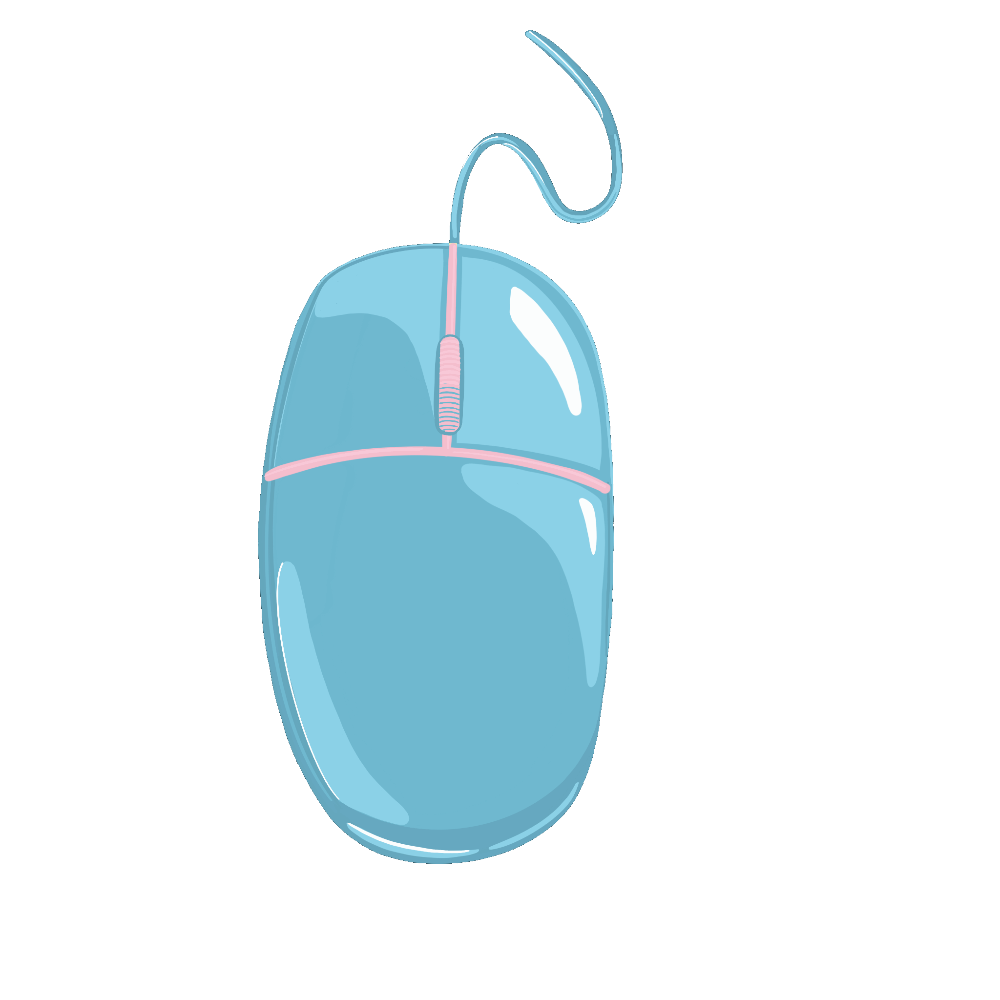

MOUSE:
A mouse is a small device that a computer user pushes across a desk surface in order to point to a place on a display screen and to select one or more actions to take from that position. The mouse first became a widely used computer tool when Apple Computer made it a standard part of the Apple Macintosh.

return button